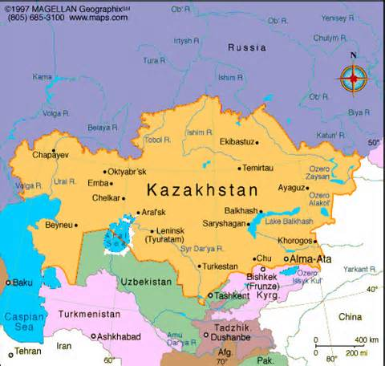

Republic of Kazakhstan
Republic of Kazakhstan, is a country in Central Asia, with a minor part west of the Ural River and thus in Europe. Kazakhstan is the world's largest landlocked country by land area and the ninth largest country in the world; its territory of 2,724,900 square kilometres (1,052,100 sq mi) is larger than Western Europe. It has borders with (clockwise from the north) Russia, China, Kyrgyzstan, Uzbekistan, and Turkmenistan, and also adjoins a large part of the Caspian Sea. The terrain of Kazakhstan includes flatlands, steppe, taiga, rock canyons, hills, deltas, snow-capped mountains, and deserts. With an estimated 18 million people as of 2014[8] Kazakhstan is the 61st most populous country in the world, though its population density is among the lowest, at less than 6 people per square kilometre (15 people per sq. mi.). The capital is Astana, where it was moved from Almaty in 1997.
The territory of Kazakhstan has historically been inhabited by nomadic tribes. This changed in the 13th century, when Genghis Khan occupied the country. By the 16th century, the Kazakhs emerged as a distinct group, divided into three jüz (ancestor branches occupying specific territories). The Russians began advancing into the Kazakh steppe in the 18th century, and by the mid-19th century all of Kazakhstan was part of the Russian Empire. Following the 1917 Russian Revolution, and subsequent civil war, the territory of Kazakhstan was reorganized several times before becoming the Kazakh Soviet Socialist Republic in 1936, an integral part of the Soviet Union.